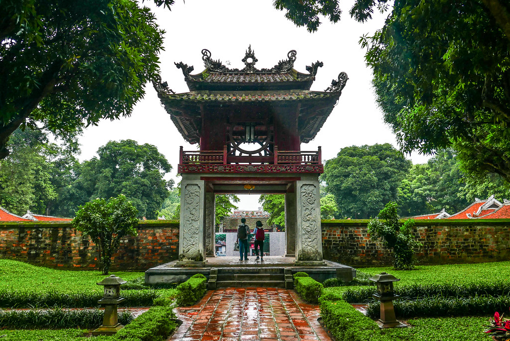
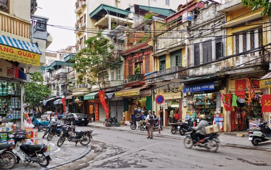

The north of Vietnam makes a statement with majestic mountain ranges, centuries-old rice terraces, and fascinating ethnic groups.
Hanoi

If you only visit one place in Northern Vietnam, it will likely be Hanoi. As the nation’s capital, Hanoi is an exhilarating blend of eastern and western culture. French colonialism is visible through cuisine as well as architecture, particularly in the French Quarter in the Hoàn Kiếm District.

Hanoi is packed with incredible temples, and a visit to the 11th century Temple of Literature is a must-do activity. The side-by-side Ho Chi Minh Museum and Mausoleum are also major attractions in Hanoi, and both are striking buildings from the exterior.
Ha Long Bay
One of the best-known destinations in the entire country is Halong Bay. Its reputation is well deserved, because it is truly beautiful. Halong means descending dragons, which is indicative of the silhouette of the limestone outcrops that poke out from the water. Day cruises or overnight boat trips are a spectacular way to experience the beauty of Halong Bay and to see as many of the islands as possible.
In addition to Cat Ba, Quan Lan is a popular stop that is beginning to develop some tourism infrastructure to accommodate a longer stay. You can go swimming, look for caves to explore or find some of the more remote, uninhabited islands while cruising through Halong Bay.
Sapa
The mountainous town of Sapa is known for its culturally diverse population as well as its proximity to incredible scenery. Sapa itself is home to the members of many hill tribes, including the Hmong, the Dao, the Muong and the Tay. The town also overlooks the magnificent Muong Hoa Valley and its terraced rice fields, which are staggering to behold.
If you want to get an inside look at the local residents and their cultures, then head to Sapa for an overnight trek or a homestay. You can hike out to the more remote villages and then spend the night, dining and learning from the hill tribe residents.